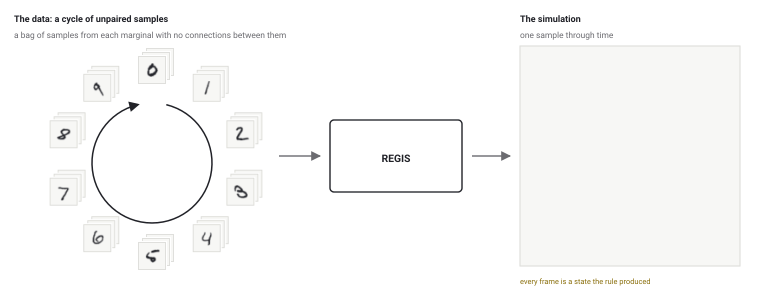
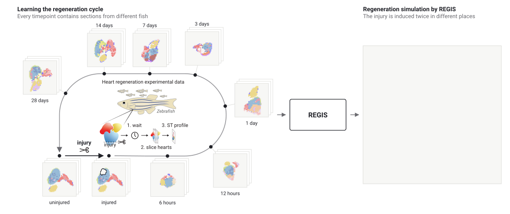
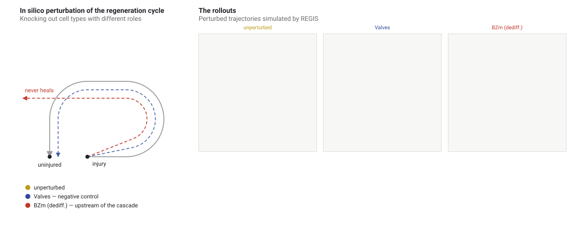

Simulate, Don’t Interpolate
Recovering continuous spatial dynamics from discrete, unpaired snapshots
Introduction
Many complex systems can only be understood through their change over time. Examples range from cell-fate decisions in biology[1] to chemical pattern formation[2] and grain growth in materials[3]. Modelling these systems requires understanding the processes that generate the observed states and govern their subsequent evolution. Yet complete trajectories are often difficult or impossible to observe. Destructive measurements, for example, provide detailed snapshots while preventing repeated observation of the same sample[4]. These observations provide a fragmented view of the system: they describe its marginal distributions at different times but do not directly reveal individual trajectories. Our aim is to learn a dynamical process from these unpaired snapshots, so that we can simulate how the system evolves and investigate its behaviour beyond the observed times or under local perturbations.
That is an ill-posed problem: distinct processes can produce the same distributions, so fitting the distributions alone cannot identify the dynamics that generated them[5][6]. Optimal transport, continuous flows and stochastic bridges[7][8], flow matching along a chosen probability path[9], and recent multi-marginal and adversarially-learnt-interpolant variants[10][11][12][13] all reproduce the marginals, but the evolution connecting them comes from the choice of interpolant rather than from of the system. REGIS (REcovering Generative dynamics from Independent Snapshots) takes a different approach: instead choosing the interpolant, it architecturally constraints the space of rules that produce the unit system updates. These constraints come from our intuition about the modelled systems and while being awkward to state about a probability path they are often natural to state about an update rule. In this work, we focus on modelling spatial processes and therefore learn a rule that is local in space, Markovian and time-invariant, and which is applied iteratively to simulate the evolution of the system. We implement the rule as a neural cellular automaton[16][17] and train it adversarially[18] against the observed distributions, under the relativistic objective of R3GAN[19].
Below, we demonstrate that this approach can be applied to processes with very different dynamics: MNIST digits cycling through a sequence, a physical model of magnetism, and tissue regenerating after injury — learned from real spatial transcriptomics data. And because the rule is local and Markovian, the state can be edited part-way through the evolution, enabling in silico perturbations as experiments inside this framework without the need for any additional machinery.
Stable long-horizon dynamics

Handwritten digits have no natural time evolution, but we can define one: a cycle 0 → 1 → ⋯ → 9 → 0, learned as transitions from each digit to the next. The point of a cycle is that it never ends — once we have learned the rule, we can apply it sequentially and test the stability of the trajectories on ultra-long horizons. Starting from real test images we run up to 1000 consecutive transitions and measure the Fréchet distance to real images in a frozen MNIST classifier’s feature space.
| Model | Parameters | Digit transitions completed | ||||
|---|---|---|---|---|---|---|
| 1 | 5 | 10 | 100 | 1000 | ||
| REGIS (ours) | 88 K | 37.228.9–54.4 | 28.121.9–44.4 | 45.728.8–49.9 | 20.819.1–25.3 | 21.418.9–24.7 |
| Non-local control Non-local control REGIS with a dilated update network that can see the whole image in one update. It uses the same training procedure and a similar parameter count to isolate the effect of locality. | 83 K | 53.939.9–81.1 | 13155.7–270 | 208161–294 | 1,304†1,017–1,575 | 1,512†1,376–2,533 |
| MMSFM Multi-marginal stochastic flow matching A transport method that learns stochastic paths through several snapshot distributions using flow and score networks. Adapted here to overlapping triplets in the digit cycle. Lee, Moradijamei & Shakeri, 2025. [11] Multi-Marginal Stochastic Flow Matching for High-Dimensional Snapshot Data at Irregular Time Points | 18.6 M | 81.042.6–122 | 15986.7–215 | 46.626.9–66.6 | 262†160–1,272 | 34,928†5,498–64,357 |
| MMtSBM Multi-marginal temporal Schrödinger bridge matching Learns stochastic bridges connecting successive snapshot distributions, using forward and backward drift networks. Here, the transitions are arranged in a ten-digit loop. Gravier, Boyer & Genovesio, 2025. [12] Multi-Marginal Temporal Schrödinger Bridge Matching from Unpaired Data | 3.6 M | 285195–429 | 303204–2,059 | 848184–6,176 | 1,596176–64,559 | 1,852†176–55,282 |
All models in the comparison perform well in the beginning; however, the gap increases over time and at the horizon of hundreds of digit transitions, REGIS is the only model that retains its initial quality. Models also take distinct approaches to the transition between digits, as illustrated in the video below - while REGIS gradually reshapes the stroke, reusing the present structures, other methods merely interpolate between digits or noise-denoise them.
Run the cycle yourself
The entire model has just 88 K parameters, making it suitable for in-browser local inference. Sample a real test digit or draw your own, press play, and leave it running! The simulation can run forever.
If you decide to draw your own digit, say a 3, note that it isn't trivial that the system automatically knows that it should produce a 4 next. No external classifier is involved, and all iterations are strictly local; therefore the model should first gather the information in a distributed fashion to understand what has been drawn. Such self-classifying behaviour has been reported before[23], but it's still fascinating to see it in a dynamic system.
Loading fetches the learned rule (368 KB) and 80 real MNIST test digits (80 KB), then runs the cycle locally.
Start from
Run
Speed
Handwriting
The latent code is fixed, so the trajectory will produce exactly the same digits every time. Click above to change the code.
Data-efficient rule recovery and extrapolation
Cycling MNIST experiments show the model can hit a sequence of marginals, but this systems lack a real underlying dynamics. To test whether REGIS can learn the process and not just copy the snapshots, we turn to the Ising model — a theoretical model of ferromagnetism that shows the behaviour of spins on a 2D lattice. We train REGIS on five marginal distributions, representing different timepoints in the coarsening process: t ∈ {3, 10, 17, 300, 1000}.
Since the true dynamics are known, we can evaluate REGIS on a much deeper level compared to the MNIST experiment. Beyond the just matching the growth law, REGIS exhibits the following properties: Extrapolation in time and spatial size. REGIS reproduces the ground-truth growth law up to t = 4000, four times the last observed time. The same rule also simulates 512 × 512 lattices after training on 128 × 128 crops, without retraining. Data efficiency. REGIS learns the coarsening dynamics from as few as 50 unpaired snapshots. Even in this low data regime, the mean domain length remains close to ground truth, while the baseline diffusion model exhibits a significant performance drop under low data budgets. Recovery of the microscopic rule. We can inspect the learned rule by measuring the probability that a spin flips for each configuration of its neighbours. These probabilities match the true microscopic rule almost exactly; the largest deviations occur for flips that are very rare in the data. An adult zebrafish can regrow an amputated piece of its ventricle, a heart compartment, and a recent spatial-transcriptomic atlas maps that process[27]. The heart cross-sections are profiled by Stereo-seq, giving the spatial position of every annotated cell type in the uninjured heart and at seven timepoints after injury. The dataset is small — only 4-6 sections per timepoint — and has the typical obstacles of biological data: destructive measurement, high variability in heart shape, composition and response, and lack of well-characterised ground truth.
We define the target dynamics as a loop: the uninjured state persists until an injury is introduced at random, after which the trajectory passes through the observed "injured" marginals in order and returns to uninjured state. After training, we evaluate by virtually injuring hearts that the model has never seen in injured state during training. The simulated regeneration trajectories match the real data, showing the correlation of 0.848 ± 0.066 across seven seeds between the cell type composition at each timepoint.
 Similar to the MNIST experiment, the model is small enough for the inference to be performed locally in the browser. Drag on the "blue" region to injure the heart and watch the regeneration process. Loading fetches the learned rule (135 KB) and a bank of 16 real uninjured heart sections (3.9 MB), then runs the simulation locally. Click or drag on the heart to cut tissue and watch it regenerate. Aim for the
ventricle, the blue body — the atlas only ever amputates its apex.
Cuts to the bulbus arteriosus (yellow) or the atrium (red) are
completely out of distribution. Off, the rule keeps running from the state it reached: the clock returns to uninjured, the density tracks clear, and the next injury starts a new profile. Painting sets those bins to damage and starts the clock. Re-injuring a healed heart keeps accumulating time rather than resetting it. One capture spot per bin, coloured by dominant cell type, opacity by cell mass. The five BZm states (in cascade order) instead take the label wherever they exceed their own pooled 99.7th percentile — a plain argmax loses them almost everywhere they appear. Same display rule as the header video. Although we cannot compare the simulated trajectories with complete experimental trajectories, we can test whether the model reproduces known biological relationships. Heart regeneration involves border-zone cardiomyocytes, the heart muscle cells near the injury, together with macrophages, pro-regenerative fibroblasts and epicardial cells. The cardiomyocytes pass through a sequence of activation, dedifferentiation, proliferation and redifferentiation. If the learned dynamics reflect this sequence, suppressing one state should affect the states that follow it more strongly than those that precede it. We test this using in silico knockouts, keeping the abundance of a selected cell state at zero after every simulation update. We then compare the cell composition at 28 days with the unperturbed simulation and measure how the knockout changes the cardiomyocyte response. Red blood cells and valve cells serve as negative controls. Knocking out populations associated with regeneration changes the final composition more than knocking out control populations in 75 ± 10% of comparisons between the two groups (one-sided p = 0.008 across seeds). Within the cardiomyocyte cascade, downstream states retain 31 ± 10% of their unperturbed amplitude, whereas upstream states retain 99 ± 12%. Negative-control knockouts have a smaller effect, retaining 87 ± 14% of the unperturbed cascade amplitude. The model learns these responses from unpaired snapshots, without being trained on knockout experiments.  The same tests help distinguish REGIS from models that fit the observed marginals equally well or better. Adding an explicit time input improves the correlation with observed cell compositions to r = 0.956 ± 0.004, compared with 0.848 for REGIS. However, downstream states then retain 63 ± 7% of their unperturbed amplitude, and the distinction between regeneration-related populations and controls falls to chance (50 ± 18% of pairs). The non-local control shows a similar pattern: a correlation of r = 0.877 ± 0.038, but 74 ± 4% downstream retention and chance-level separation of the two groups (46 ± 8%). One example is valve-cell abundance, which varies between the observed timepoints. The time-conditioned model reproduces these fluctuations by repeatedly removing and regenerating valve cells, even though the differences can arise from sampling different hearts. REGIS maintains the valve cells once they are established. These comparisons suggest that locality and time-invariance help recover biologically meaningful responses to perturbation, even when they do not improve the fit to the observed distributions.![Left, five unpaired Ising marginals at t = 3, 10, 17, 300 and 1000, each shown as a stack of three independently quenched 128 by 128 crops, with a bar above marking the mean domain length growing across them. Below them, mean domain length against simulation time on log axes: the ground-truth growth law and the learned rule track one another through the observed window and on into the shaded region past the last observation, out to four times it. Right, one 512 by 512 lattice simulated by the same rule, four times the linear size it was trained on, with the 128 by 128 training crop drawn on it as a dashed square.](assets/figures/ising.svg)
Real world application recovers textbook biology
Interactive heart regeneration simulator
Heart section
Run
Drag on the heart
Cell types
Does it reflect known biology?
References